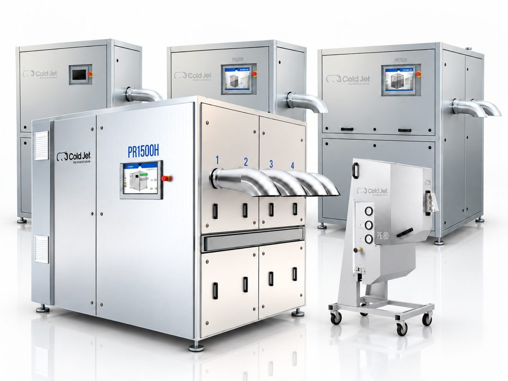
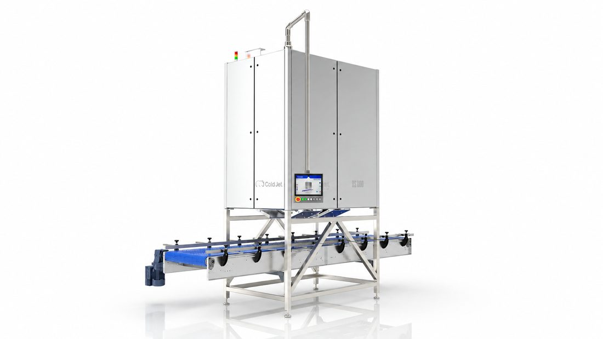
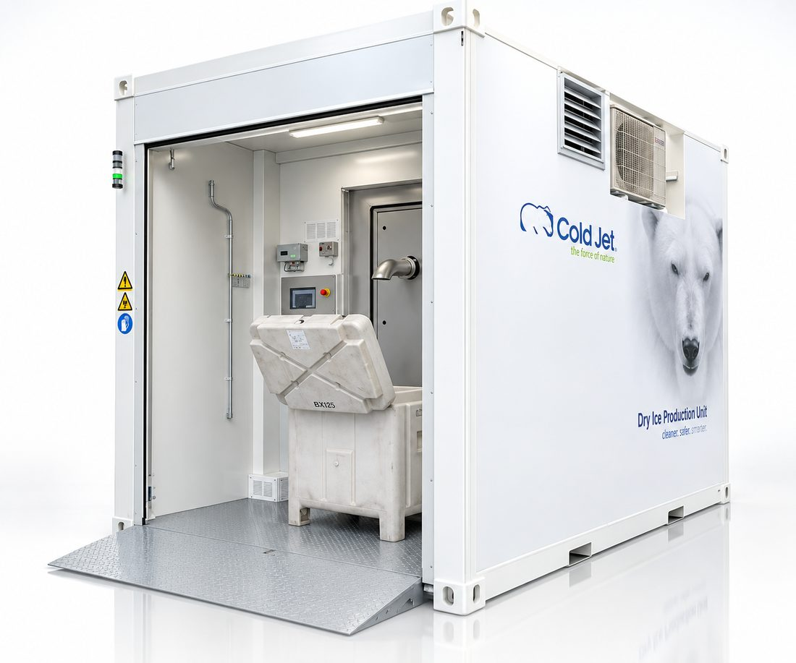
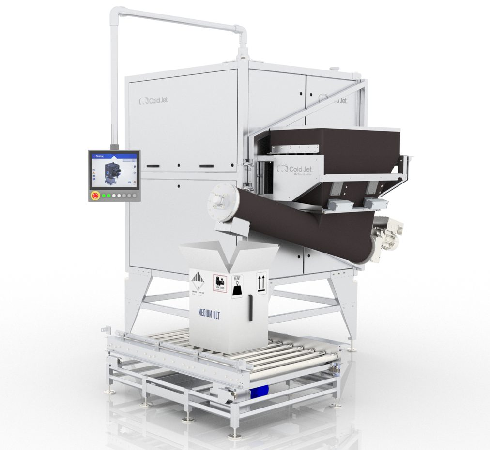
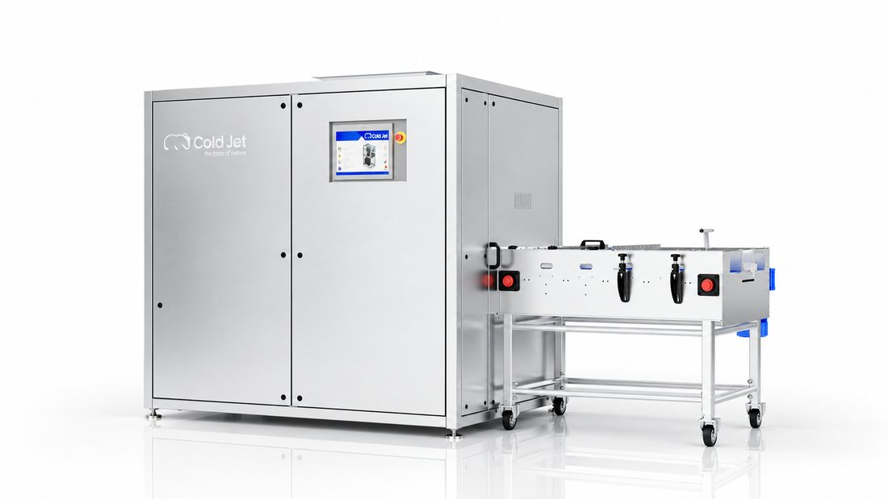
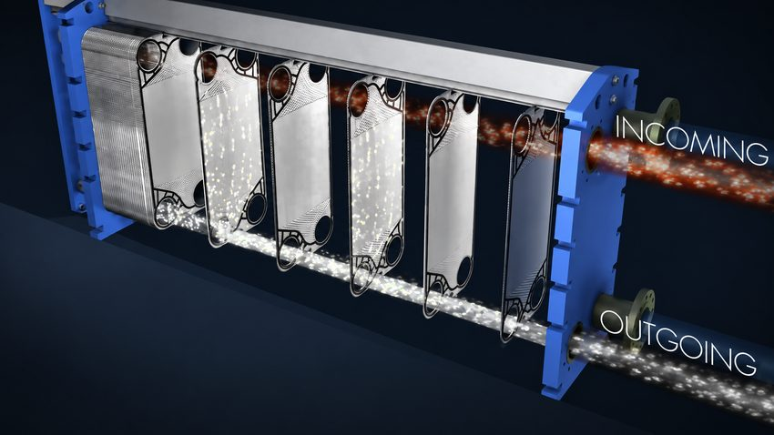
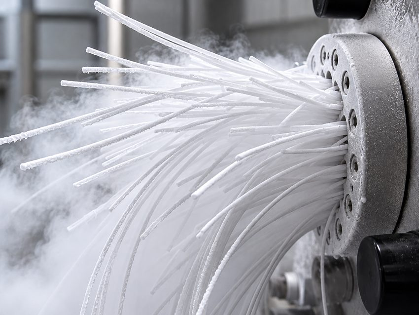
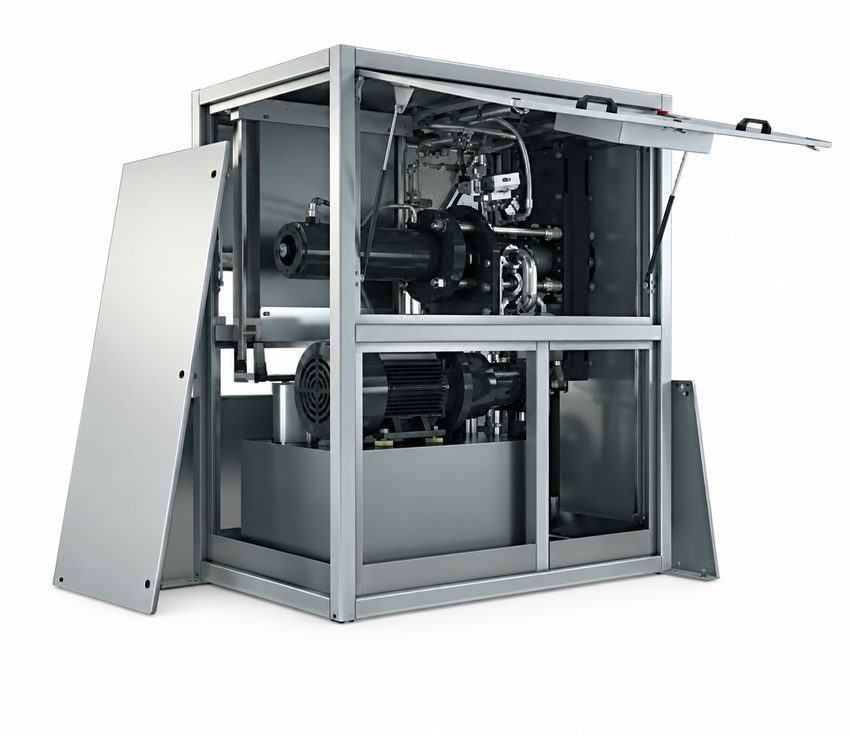
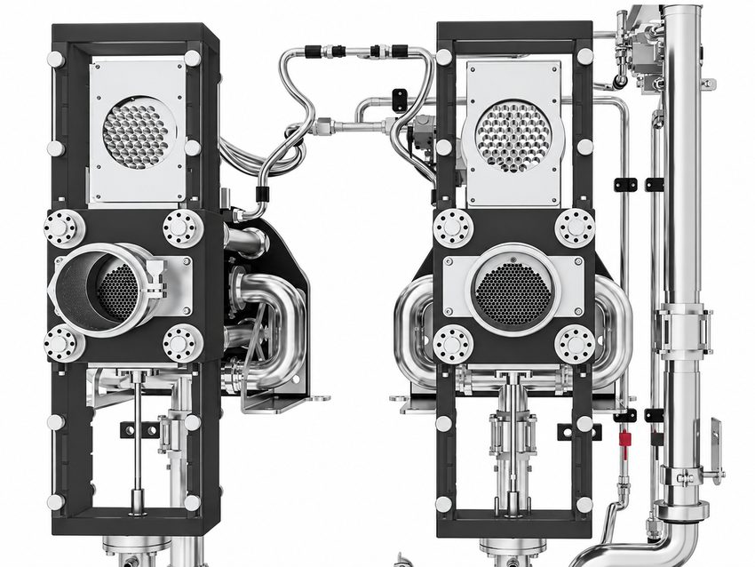

드라이아이스 세척
3 mm 펠렛을 현장에서 생산해 블라스터에 안정적으로 공급합니다.
펠렛타이저액체 CO2를 펠렛과 너겟으로 생산하고, 필요한 규격의 슬라이스와 블록으로 재성형합니다. 정량 투입과 포장, 회수 설비까지 사용 목적과 생산량에 맞춰 연결합니다.
LCO2(액화이산화탄소)를 공급받아 고체로 변환하고, 압축·성형하여 드라이아이스 펠렛 또는 너겟을 생산합니다.
Cold Jet은 독자적인 Sub-Cooling Technology와 고밀도 압출 기술을 통해 균일하고 단단한 드라이아이스를 생산합니다. 오랜 경험을 바탕으로 한 높은 밀도, 뛰어난 CO2 전환 효율과 안정적인 생산 기술은 전 세계 다양한 산업 현장에서 이미 검증되었습니다.
만들고자 하는 드라이아이스의 형태와 설치·운용 조건에 따라 다섯 가지 제품군으로 나뉩니다. 필요한 분류를 선택하면 해당 시리즈를 자세히 볼 수 있습니다.

PE-80 · PR120H · PR350H · PR750H · PR1500H — 저용량 자체 생산에서 대형 상업 생산까지, 액체 CO2로 펠렛과 너겟을 생산하는 기반 라인업입니다.
시리즈 보기 →
DS500E · DS1000E — 펠렛 단계를 거치지 않고 액체 CO2에서 곧바로 드라이아이스 슬라이스를 생산하는 다이렉트 슬라이스 제조기입니다.
시리즈 보기 →
다이렉트 슬라이스를 직접 생산하는 DS500E · DS1000E, 정량 통합형 Integrated Dosing System, 원거리·임시 현장용 Production Hub로 구성됩니다.
자세히 보기 →
펠렛 생산과 정량 투입을 하나의 설비로 통합해 계량·투입 공정 없이도 바로 이송·포장할 수 있습니다.
자세히 보기 →
R500H · R1000H · R2000H — 별도 펠렛타이저에서 생산한 펠렛을 원하는 슬라이스·블록으로 압축·재성형하는 리포머 시리즈입니다.
R Series 자세히 보기 →먼저 “어디에 사용할 것인가”를 정하면 펠렛 크기, 슬라이스 중량, 시간당 생산량과 자동화 범위를 더 정확하게 결정할 수 있습니다.
3 mm 펠렛을 현장에서 생산해 블라스터에 안정적으로 공급합니다.
펠렛타이저혼합·분쇄·포장 공정에서 제품 온도를 빠르게 낮추거나 유지합니다.
펠렛 · 너겟 / 정량 투입육류, 수산물, 밀키트와 냉동식품의 운송 조건에 맞춰 투입량을 관리합니다.
슬라이스 / 자동 포장기내식과 온도 민감 식품의 이동·보관에 맞는 슬라이스를 생산합니다.
R Series 리포머검체와 의약품 등 온도 관리가 필요한 물류의 냉매 공급을 지원합니다.
슬라이스 / 정량 투입다양한 규격의 펠렛과 슬라이스를 대량 생산하고 포장해 유통합니다.
고용량 라인 / 리포머드라이아이스는 보관하는 동안 승화합니다. 필요한 곳에서 필요한 만큼 생산하면 신선도와 공급 일정, 사용 형태를 직접 관리할 수 있습니다.
납기나 외부 공급 일정에 맞추기보다 작업과 출하 계획에 맞춰 생산합니다.
생산 직후 사용해 보관 중 발생하는 승화와 품질 저하 부담을 줄입니다.
블라스팅, 냉각, 운송 등 사용 목적에 따라 펠렛과 너겟 크기를 선택합니다.
소규모 자체 사용부터 대형 생산·판매 설비까지 수요에 맞춰 구성할 수 있습니다.
CO2 전환 효율을 높이고, 부서지지 않는 밀도로 성형하고, 생산 시작부터 안정적인 품질을 유지하고, 필요에 따라 사이즈를 즉시 전환하는 것 — Cold Jet의 기술은 이 네 단계에서 드라이아이스 생산의 차이를 만듭니다.

Cold Jet의 Sub-Cooling Technology는 펠렛타이저로 공급되는 액이 CO2를 사전에 냉각해 고순 드라이아이스로 전환되는 효율을 높입니다. CO2 소비와 생산 과정의 손실을 줄여 보다 효율적이고 경제적인 드라이아이스 생산이 가능합니다.

Cold Jet의 정밀한 압축·압출 기술은 드라이아이스를 높은 밀도로 성형합니다. 충분히 압축된 드라이아이스는 다이플를 통을 통과한 직후에도 쉽게 부서지지 않고 김곰 안정적인 형태를 유지합니다. 단단하고 교일한 드라이아이스는 취급과 보관 과정의 손실을 줄이고 안정적인 품질을 유지합니다.

Cold Jet의 Closed-Chamber Technology는 생산 초기부타 안정적인 품질의 드라이아이스를 만들 수 있도록 설상되었습니다. 뱠른 생산 시작과 안정적인 압축 조조건을 통해 불필요한 CO2 손실과 대기 시간을 줄이고, 연속 생산에서도 일정한 품질을 유지합니다.

Automatic Quick Die Change System은 서로 다른 Extruder Plate를 장비에 준버해 듀고 버튼 조작만으로 필요한 펠렛 사이즈로 신속하게 전환할 수 있도록 설상되었습니다. 3 mm 세첩용 펠렛에서 6 mm, 10 mm 등 다른 사이즈로 뱠르게 변경할 수 있어 생산 중단 시간을 줄이고 다양한 생산 요구에 유연하게 대응할 수 있습니다.
형태, 치수, 설치·공급 조건과 생산량을 차례로 선택하세요. 조건에 맞는 제조기와 리포머 구성을 바로 확인할 수 있습니다.
Cold Jet의 차이는 단순 최대 생산량보다 전환 효율, 가동 방식, 형태 전환과 후공정 연결에서 드러납니다. 실제 적용 기능은 모델과 선택 사양에 따라 달라집니다.
한정된 펠렛 규격과 생산량 중심
80–1,500 kg/h 펠렛 라인과 R Series 슬라이스 리포머 구성
기본 팽창·압축 조건 중심
Sub-Cooling 기술로 전환 효율과 생산 비용 개선을 목표로 설계
수동 조작과 생산 중단이 발생할 수 있음
연속 운전, 원버튼 기동, 지원 모델의 자동 다이 교체
현장 점검 위주의 독립 운전
지원 모델의 Cold Jet CONNECT® 원격 모니터링·진단
이송·계량·포장을 별도로 구성
정량 투입, 포장, 슬라이스 성형과 생산라인 통합 설계
생산 중 리버트 가스를 배출
RE-CO2 시스템으로 리버트 가스 회수·재사용 선택 가능
※ ‘일반적인 단독 제조기’는 비교 이해를 돕기 위한 대표적 구성입니다. 최종 비교는 후보 장비의 실제 사양, LCO2 조건, 요구 생산량과 자동화 범위를 기준으로 진행해야 합니다.
드라이아이스는 산업·바이오가스 시설 등에서 포집된 CO2를 액화하고 고체로 전환해 유용한 냉각·세척 매체로 사용하는 CCU(Carbon Capture and Utilization)의 한 형태입니다.
현장 생산은 장거리 운송과 보관 중 승화 부담을 줄일 수 있고, 생산 규모가 크다면 리버트 가스 회수까지 연결해 액체 CO2 사용 효율을 높일 수 있습니다.
환경 효과는 CO2 원천, 전력 구성, 운송 거리, 회수 설비와 대체 공정에 따라 달라집니다. 따라서 실제 도입 시 전체 운영 조건을 함께 평가합니다.
바테크는 사용 목적과 일일 필요량, 액체 CO2 공급 조건, 생산 공간과 전원을 확인해 펠렛타이저와 슬라이스, 이송·포장·회수 설비까지 필요한 범위로 구성합니다.